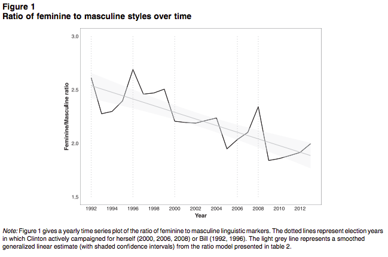

This essay is the third of three starting with my essay on the Evaluator General in two parts followed by an essay responding to the Productivity Commission's inquiry into competition in human services.
This essay is the third of three starting with my essay on the Evaluator General in two parts followed by an essay responding to the Productivity Commission's inquiry into competition in human services.
Part One
A couple of days ago I came upon care ethics via Virginia Held's book The Ethics of Care (2006) with some excitement. The ethics of care grew out of feminism, but I think the issues it raises transcend feminism and I'll conclude by arguing that in some ways its feminist roots are holding back its potential power. Though of course, it had antecedents, care ethics is associated with Carol Gilligan's argument that dominant ethical frameworks embody masculine psychology or, if you like, dramaturgy. Gilligan developed her moral theory in contrast to her mentor Lawrence Kohlberg's stages of moral development. Gilligan's In a Different Voice argued that men's and women's ethical frames are different. Where men's ethical frames embodied notions of justice and abstract duties or obligations tested in Kohlberg's approach, womens' perspectives privileged empathy and compassion which were defined in concrete relationships. [1. From Wikipedia: Subsequent research suggests that the discrepancy in being oriented towards care-based or justice-based ethical approaches may be based on gender differences, or on differences in actual current life situations of the genders.]
Here's an outline of the structure of 'care ethics' in a review of Virginia Held's book.
Held's account of the ethics of care starts with a list of five defining features. First, "the focus of the ethics of care is on the compelling moral salience of attending to and meeting the needs of the particular others for whom we take responsibility". Second, from an epistemological perspective the ethics of care values emotions, and appreciates emotions and relational capabilities that enable morally concerned persons in actual interpersonal contexts to understand what would be best. Third, "the ethics of care rejects the view of the dominant moral theories that the more abstract the reasoning about a moral problem, the better because the more likely [to?] avoid bias and arbitrariness, the more nearly to achieve impartiality. The ethics of care respects rather than removes itself from the claims of particular others with whom we share actual relationships". Fourth, the ethics of care proposes a novel conceptualization of the distinction between private and public and of their respective importance. Finally, the ethics of care adopts a relational conception of persons, which is in stark contrast to Liberal individualism.
I don't know enough to say that this approach is 'better' than those it defines itself against, but it certainly speaks to my frustrations with the dominant paradigm - something I expressed in a comment on the Facebook post of Robert Wiblin, one of the (I think) founders of 80,000 hours a charity of which I'm a big fan) which asked "If you only had 3 minutes to give a random person (similar to your social network) advice, what's the most useful thing you could tell them?" Amid lots of worthwhile tips for life, I wrote this. "Life is not a toy model, a trolley problem or a piece of inspiration porn. It's life.". I was trying to convey my unease at the question. It is, of course, a perfectly acceptable question to ask so no criticism was intended. Every discussion must start somewhere - with the universal or the particular, the abstract or the concrete - with the interest being in how each relates to the other.
Still our culture is awash with abstraction, universalism and instrumentalism and as such desperately in need of balancing with precisely the kind of thing that the ethics of care can offer. [2. I note parenthetically, or footnotically, that care ethics seems to make a lot better sense of the ethics of our ethical responsibilities to animals, than Peter Singer's claimed utilitarianism which I can't make head or tail of.] So here are some introductory reflections. This part concludes with some observations on Adam Smith as the original 'care ethics' guy. Subsequent parts at least as currently planned will talk about:
- the implications of this framework for what we're all assured is the 'market' in human services.
- the way in which feminism as an ideological vehicle for women's interests tends to underplay the wider universal significance I've intimated it has above.
Adam Smith and the ethics of care
Adam Smith's work was built on the ethics of care. He was a very urbane guy, not easily roused to passion. But the two most passionate passages in his whole oeuvre (I'm not too sure what an "oeuvre" is - though I usually have mine poached - but I'm pretty sure it fits right here between the beginning and end of this sentence) are one referring to the tribes of Africa being captured as slaves as "those nations of heroes" and this one:
What are the pangs of a mother, when she hears the moanings of her infant that during the agony of disease cannot express what it feels? In her idea of what it suffers, she joins, to its real helplessness, her own consciousness of that helplessness, and her own terrors for the unknown consequences of its disorder and out of all these, forms, for her own sorrow, the most complete [3. at this point Grammerly helpfully highlights the last three words indicating that there's a "qualifier before non-gradable adjective" - I suggest Grammerly takes it up with Adam Smith] image of misery and distress. The infant, however, feels only the uneasiness of the present instant, which can never be great. With regard to the future, it is perfectly secure, and in its thoughtlessness and want of foresight, possesses an antidote against fear and anxiety, the great tormentors of the human breast, from which reason and philosophy will, in vain, attempt to defend it, when it grows up to a man.[4. It seems reasonable to speculate that the passage is really about his own mother. Smith was a sickly child whose mother feared for his life as an infant. ]
This is philosophy as homage to care. And here's another quite good general description of care ethics which parallels the way Smith presented humanity in The Theory of Moral Sentiments:
It is a moral fact of major importance that human beings are dependent beings and it is by and through their relations with other humans that they achieve moral maturity. Their moral sense develops as well by understanding the role of value of these relations and they become morally salient for it. This is not true just about female moral agents, but also about male moral agents.
Smith portrayed the phenomenology of ethics and culture in The Theory of Moral Sentiments in just the way foreshadowed above. The baby observes its dependence on its closest relations and from fear and love comes to crave approbation and fear disapprobation. This then leads to a theory of social ethics not unlike Burke's observation about "little platoons". [5. "To be attached to the subdivision, to love the little platoon we belong to in society, is the first principle (the germ as it were) of public affections. It is the first link in the series by which we proceed towards a love to our country, and to mankind. Edmund Burke, Reflections on the French Revolution.] As I put it in a post more than a decade ago, and long before I'd heard of care ethics:
The Theory of Moral Sentiments is built up from reflection on how people care for each other – and how they care most for those closest to them. Their care, their sympathy, radiates from them towards others with an intensity which is inversely proportional to their social proximity.
Anyway, Smith's simpatico with care ethics has been noticed in the literature - indeed Annette Baier [6. Who incidentally married Kurt Baier, Dunera Boy and my Dad's closest friend, confidant and mentor in the camps and in Melbourne after the war] dubbing Smith's friend and mentor David Hume the “women’s moral theorist.” Baier argues that Hume denies "that morality consists in obedience to a universal law, emphasizing rather the importance of cultivating virtuous sentimental character traits, including gentleness, agreeability, compassion, sympathy, and good-temperedness". These ideas about Smith as a 'proto' care ethicist have been pointed out since the early 2000s (I'd be surprised if Baier didn't point them out writing about Hume, but who knows since I can't easily access the essay?) and dealt with in this plodding essay [7. You can read more of the essay here.] where Andrew Terjesen raises the question of whether Smith's heart is in universalist or 'contextualist' values in a fairly academic way - which is at least to me pretty unconvincing. The point - it seems to me anyway - is that Smith built towards universal values via concrete experience. One did not trump the other. But one - the universalist command of principle and policy - trumps the ethics of care today.
Part Two
The 'market' in human services
I think the 'care' perspective helps us see something I've suggested and am becoming more convinced of - that the whole agenda for opening up human services to competition is built on a misplaced metaphor of human services as a 'market'. And what are markets if not waiting to be opened up? Of course, those weasel words 'other things being equal' are thrown about, and given them, who wouldn't want services opened up?
I think we should start from a different premise. Before doing so let's take a quick look at a canonical market. Note that in a market, buyer and seller have conflicting interests. This was seen as a problem by pre-modern economic thinkers. They had difficulty escaping the pull of ethical theories that were built for other contexts than markets. Smith's breakthrough (or you can attribute it to his antecedents like Hutcheson, Mandeville and their intellectual ancestors) was to treat markets as an autonomous ethical field enabling the claim that, in an ideal market, the conflict between buyer and seller is a feature, not a bug.
It drives the discovery by simultaneously facing both buyer and seller with the Spice Girls question: Tell me what you want, what you really really want. The buyer must determine how much he wants the item - including in relation to all the alternatives - while the seller must determine how much he wants to sell it - compared with all the alternatives which will normally involve judgements about the opportunity cost of its production and sale.
Again, that this is a mercenary exchange is a feature, not a bug. For if the long list of pre-conditions for market efficiency are met, market participants need not trouble themselves with knowing anything of each other - or indeed of many other things. [8. For Smith of course it wasn't quite this simple, because though at the limit market exchange was mercinary, it all took place within a context that was given by the society. It was an invitation for human connection.]
In any event, if one takes the market as the 'ground', as the place in the chaos at which one sets intellectual anchor and tries to make sense of the world, we end up in the 'second best' logic of saying that, because the market in human services does not meet the preconditions of an efficient market, policy should devote itself to providing them as a precondition for moving towards opening up service provision. There's a technical objection to this - which is the theory of the second best. One way of outlining its import is to say that the theory (I've never known why it isn't known as a theorem because that's what it is) tells us that if you can't remove all obstacles to optimal outcomes, removing some sub-set of them may make things worse rather than better. Anyway, that theory amounts to an impossibly theorem and has, as you might expect, been summarily swept under the intellectual carpet courtesy of the phenomenon of discursive collapse. Anyway, I have some sympathy for ignoring the strictures of the theory of the second best - at least if one tries to keep your wits about you and understand, as Hicks did in a different context, that you're taking a dangerous step. But I think there are more compelling, commonsensical reasons for being suspicious of this approach. One is this. Empathy is of the essence in caring relationships. It is, as Smith argued, the principle mode of cognition of one human by another. [9. He used the word 'sympathy' as the singular fulcrum or engine of society aspiring to the 'Newtonian method' of rhetoric in which “an immense chain of the most important and sublime truths, all closely connected together” were explained “by one capital fact, of the reality of which we have daily experience”.] And it's also integral to the delivery of care which is, generally speaking, more efficacious when received within some empathic bond between those giving and receiving care.
Finally, there's this. In a great many human services we don’t really know what we're doing. Though bureaucrats have no trouble running up benchmarks against which they can administer programs with every sign of pursuing 'best practice' and being 'evidence based', the KPIs that emerge are often scientistic, which is to say they 'go through the motions' of being evidence based, of setting the right incentives and so on, but in fact their 'rigour' is only an imitation of rigour. They look good on the 'dashboard' that's shown to the minister and used to generate briefings on the program, but whether they're the right measures, whether they're being gamed, whether the conditions of the program are changing as it unleashes its own incentives: well as Ted Kennedy said to Mary Jo, we'll cross that bridge when we come to it.
In fact, we can be more specific about this idea of starting with a market full of market failure and then purging it of those failures. As I wrote in my previous piece on human services:
[A]n appealing measure of the performance of a job placement program would be the number of job seekers continuing in new jobs after job-placement services. For a child protection program, it might be the number of children removed from struggling families following early intervention. But could too rapid job matching destroy value by foreclosing better matches, or by diverting valuable system resources to where they are redundant? And how does one weigh up the relative merits of child removal with poor home care?
Note that despite the power of well functioning markets to generate information, attending to the empowerment of consumers - as recommend in the recent Productivity Commission preliminary report on human services - no matter how much one purges the system, it exists as a relationship between consumers and producers and that relationship and the information it evinces reflects on that relationship. So even if it is possible to empower consumers about their own interest in the market which is often highly problematic this does not generate good information on efficiencies at the system level. Thus, if we're worried about the system efficiency issues identified in the quote above, the 'market' won't generate them.
Of course, if you think I'm arguing for 'the government' to handle this, well perhaps, but I'm certainly not arguing that we shouldn't open up these 'markets' because 'the government' is doing such a great job now. Currently, I'd offer precisely the same critique of the system we have now - which is that it is not being built to generate the kind of information that's necessary to try to improve system efficacy either!
So, as outrageous as it sounds, I think the preeminent task is not to configure 'the market' as open or closed but to understand what we're doing. To put it another way, the focus on opening the system up looks like thinking about improving efficiency (though of course just thinking about it doesn't mean one achieves it - Google "VET reform" for further references) when the real issue is efficacy. And we're pretty ignorant about how to promote efficacy - which is hardly surprising because the information we're generating doesn't shed light on it!
Anyway, with this in mind, I was intrigued by this list of the four ethical elements of care provided by Joan Tronto. From Wikipedia:
- Attentiveness Attentiveness is crucial to the ethics of care because care requires a recognition of others' needs in order to respond to them.The question which arises is the distinction between ignorance and inattentiveness. Tronto poses this question as such, "But when is ignorance simply ignorance, and when is it inattentiveness"?
- Responsibility In order to care, we must take it upon ourselves, thus responsibility. The problem associated with this second ethical element of responsibility is the question of obligation. Obligation is often, if not already, tied to pre-established societal and cultural norms and roles. Tronto makes the effort to differentiate the terms "responsibility" and "obligation" with regards to the ethic of care. Responsibility is ambiguous, whereas obligation refers to situations where action or reaction is due, such as the case of a legal contract. This ambiguity allows for ebb and flow in and between class structures and gender roles, and to other socially constructed roles that would bind responsibility to those only befitting of those roles.
- Competence To provide care also means competency. One cannot simply acknowledge the need to care, accept the responsibility, but not follow through with enough adequacy - as such action would result in the need of care not being met.
- Responsiveness This refers to the "responsiveness of the care receiver to the care". Tronto states, "Responsiveness signals an important moral problem within care: by its nature, care is concerned with conditions of vulnerability and inequality". She further argues responsiveness does not equal reciprocity. Rather, it is another method to understand vulnerability and inequality by understanding what has been expressed by those in the vulnerable position, as opposed to re-imagining oneself in a similar situation.
This seems to me to be a more promising list of considerations than the list of requirements for market efficiency - which are a lot longer than this list of requirements for perfect competition:
- All firms sell an identical product;
- All firms are price takers - they cannot control the market price of their product;
- All firms have a relatively small market share;
- Buyers have complete information about the product being sold and the prices charged by each firm; and
- The industry is characterised by freedom of entry and exit. Perfect competition is sometimes referred to as "pure competition".
In this vein, the UK Institute for Government offers a list with some family resemblance to the abstract list from the economics textbook here:
To support effective market stewardship, government departments and other commissioning organisations should:
- Clarify roles, responsibilities and accountability arrangements
- Be more considered, open and flexible in design
- Focus on competition, market structure and market dynamics
- Increase transparency.
The (masculine) psychopathology of economics and management
Of course it is always possible to gainsay any claims I've made since I'm engaged in a paradigm war, the old paradigm will have resources with which one can bodgy up something of a defence. Certainly in the standard economic paradigm information is important (though as I've said, even here it's not system information, but information between buyer and seller). But as on other occasions, I'm addressing myself to the psychopathology of the discipline. What's going on here has its analogues in psychology. The book Love at Goon Park tells the story of Harry Harlow of the 'terry towelling' monkey experiments which rescued Adam Smith's point from the scientism of mid 20th-century behaviourist psychology:
Professor Harlow has already been asked to correct his language: He’s been instructed on the correct term for a close relationship. Why can’t he just say “proximity” like everyone else? Somehow the word “love” just keeps springing to his lips when he talks about parents and children, friends and partners. He’s been known to lose his temper when discussing it. “Perhaps all you’ve known in life is proximity,” he once snapped at a visitor to his lab at the University of Wisconsin in Madison. “I thank God I’ve known more.” … Who wouldn’t believe that love was, at its best, a safe harbor — a parent’s arm scooping up a frightened child, holding it heart to heart? It’s hard to believe, in retrospect, how many powerful scientists opposed this idea.
What (the hell!) was driving this? Clearly not science, but a kind of scientism, in which 'love' was somehow tainted - to be ruled out by the framework itself - peremptorily, not on its merits. I had a milder, but similar frisson of resistance myself when I came across the centrality of the idea of empathy in design, but on understanding it, came to support the idea.
Technologies of empathy
What we need now are technologies of empathy. [10. I note here, by way of aside that empathy can't 'scale' mechanically, it has to be grown. I suspect one attraction of 'contracting out' is the idea that it scales.] There's little empathy in the existing system which is an unpromising foundation on which to open it up or otherwise marketise it. It might make things better. It might make them worse. [11. Folbre offers this point about empathy and choice:
Choice is a funny thing, affected by both moral values and by social pressures. Often what we choose depends on what we think other people will choose. It's harder to stay honest if we see other people cheating. It's harder to engage in teamwork if other team members are shirking. It's harder to take on responsibilities for the care of other people if those responsibilities don't seem to be shared. This is why too much choice—or too little social coordination of choice—can lead to outcomes that can be just as problematic as having no choice at all.]
What we do know is that we're not focusing on what matters. And what matters is whether we can become properly intentional (or to adapt the term above, attentional) towards the caring role when it is not being provided organically within the society. In this regard, there's a deep lacuna in our ideologies. If you'll permit these ideal types, to liberalism (and its mathematisation - neoclassical economics) the problem is largely invisible. To socialism or social democracy it's a task for government to be overseen by a bureaucracy (rather than a task looking for an institution that might learn to perform it). Only in conservatism does what is provided by families and civil society come into full focus as a foundational quality of a functioning society. But, having made the giving of care in families and the maintenance of traditions of social concern, cooperation and coordination central to a functioning society, it has nothing to say about how to build such things where they're damaged or require development in some way. And it seems to me that the ethics of care offers some resources for developing that - for conceiving, developing, proving and resourcing technologies of empathy with which we can tackle those issues intentionally, rather than ignore them (as liberalism does) or assume governments can deliver them (as social democracy does by default) or consign them to a private sphere which is then effectively shunted off the stage of public concern.
The feminist roots of the ethics of care
In this regard, it seems that feminism's relation to what I call the technologies of empathy that we need to build has been a little like conservatism's relation to family and civil society. It acknowledges its centrality. Unlike conservatism, it then stresses its marginalisation from political and economic life, but where conservatism then offers nostalgia for the good old days when Big Government hadn't damaged family life and reticence about any political project focused on using the resources of the state to rebuild and maintain it, feminism offers naturalism and culture war (I'm offering a cariacature to make the point clear). [12. My definition of culture war here consists of these elements. 1) the world is separated into goodies, or those on whose behalf the culture war is waged (in this case woman) and baddies, those standing in its way (in this case men and established structures of power and patriarchy) and 2) the benefits we seek will be delivered by the goodies winning. Any transformations that are necessary to delivering the benefits are either not considered, or assumed simply to follow from the goodies' success. (At its crudest and most pronounced we see this in the sentimentalisation of revolution. A more prosaic example is the idea that we'll have more and/or better innovation by sending more money to universities and hiring more STEM teachers).] Feminist care ethicist Folbre puts it this way:
Liberal feminism has demanded greater individual rights for women. Social feminism has demanded greater social obligations, especially for men. For reasons that have to do with our economic system, as well as our political history, liberal feminism has enjoyed relatively more success in the United States than in the more traditional societies of Europe. Its very success has contributed to a dilemma. Women know they can benefit economically by becoming achievers rather than caregivers. They also know, however, that if all women adopt this strategy, society as a whole will become oriented more toward achievement than care.
Note how the thing privileged here is the interests of women rather than what might be called 'the feminine' in our culture. Of course, feminists should be promoting the interests of women and I endorse their efforts to secure justice for women. But is there a bigger prize? At least judging from this passage, the most important issue for Folbre is the interest of women vis-à-vis men, and, in so far as rebalancing our society's values and capabilities and making them less one-sidedly, 'masculine', well that will be solved by promoting the interests of women. Once their interests are addressed, well they're a natch at all that feminine stuff. Postscript: Care: a fun interview.Post-Postscript: This article offers an excellent empirical illustration of what is ultimately at stake here. [13. You may be able to download the article from here.] Here's a chart of the extent to which Hilary Clinton adopted mannerisms of 'masculine' language as opposed to 'feminine' mannerisms. Each year in which she campaigned her language lurched strongly towards the masculine.

Nice essay Nicholas.
I think you are right to question the use of markets to co-ordinate care relationships.
Though I don't think it is fair to lump responsibility for the devaluation of care at the feet of feminists. I don't think it is womens fault when they stop doing work that is so roundly devalued by society. It is not women or feminists that have created a world where those that look after our superannuation are paid 10x what we pay those that look after our children.
Realistically, if you are going to raise the social priority placed on care, we need men to value it - as both a giver and a recipient of care. To achieve that I suspect we need to shift the focus away from the selfless giving of care work, and to acknowledge that it is re paid by the most valuable thing of of all - love.
We need to acknowledge men are often denied the opportunity to do love work in the way women were once denied the right to paid work. We need to highlight its importance in a persons health and well being, and that mens mental and emotional health is damaged by this lack.
It is only by breaking down the 19th century constructionof the rational, calculating, emotionless male that has no need for such love and connection and embracing that he has a need and a right to do the work that builds loving bonds, that care will return to its proper place in our society.
Thanks for the essay.
Best wishes
Lindy Edwards
A brief thought comes to mind after a quick read to do with the notion of decentring and that this applies to the self centred rather than the centred self
I thought Lindy Edwards spoiled an otherwise good set of comments by erroneously seeming to imply that self centredness applies exclusively to men; seemed a defensive rather than constructive response.
Thanks Lindy,
I don't want to appear defensive but I think it's important to push back on something - you can guess what I expect.
I'm taking this up here because the whole essay is an attempt to be as forensic as I can be about what's going on - about the ideological contours of a situation in which something of immense importance is marginalised in our culture.
Given what I've said in the essay, saying that I'm "lump[ing] responsibility for the devaluation of care at the feet of feminists" seems to me to be like saying that I lump responsibility for social breakdown, or for our failure to regenerate degraded social capital on conservatives.
It would be true to say that, in the passive way I do in the essay I hold some feminists responsible for a problem (the marginalisation of the feminine in our culture) along with liberals, social democrats and conservatives.
I quoted a few sources. I'm not well read enough in the area to know how representative they are of 'feminism' and anyway, there are sure to be feminists to whom my criticism does not apply.
What the relevant feminists quoted were typical of for me was the way in which the interests of women can displace another quest which is for a culture in which feminine attributes of our humanity - to use rather stereotyped language - are marginalised.
The thing is, as I intimated in the essay, feminists - like everyone else - have every right to promote the interests of women when those interests are not being well served. Good on them for doing so. But, in some situations, this occurs at the expense of the marginalisation of the feminine in our culture. Again, lamenting that is not 'blaming' feminists particularly. Why should they be more weighed down by the responsibility for this issue any more than me or anyone else? I'm pointing something out. To me it's very important.
Apropos this essay, having pressed 'submit' I was standing in Readings in Carlton reading this chapter in Martha Nusbaum's Political Emotions.
As you'll see if you read it, it couldn’t be more apposite to the themes of the essay. Other good sources here and here.
Thanks Nicholas. That was really good and I fully agree with the conclusion. It is indeed a challenge, and I wholeheartedly agree a prize to be won, in workplaces and families (the two primary spheres of my experience), to at least make space for more "femininity" in our relationships (not that I would ever have called it that).
The challenge is perhaps in the end a subset of that which we now call "diversity". It rapidly becomes clear (at least in the context of workplaces) that we have created a masculine framework, and that this very framework must somehow be different if we are going to create a workplace in which all kinds of people are equally valued on the strength of their contributions and not just on their ability to resemble the dominant "type" and so navigate the framework created for that type.
I hope you do not take it badly if my highlights of a very good whole were footnote 12 and the Martha Nussbaum chapter you linked to, in reaction to which I felt both dismay and delight that such superior intellect should exist ;)
Hi Nick,
of course I agree that love should have a central place in our understanding of our own society, and that it is a core part of many services we humans provide one another in other entities than money-mediated exchange networks (markets!), ie emotional groups. What goes for 'care' btw also goes for the wider world of work: within organisations people do each other favours all the time as well, usually neither monetised nor recorded.
But to make progress in understanding this, I don't think it is all that useful to talk about the many ways in which we can categorise loving relationships (your list of 'attentiveness, responsiveness,...'). What is needed is a theory of how such relations come about, how they change, how they function, and how they can be manipulated. The entities in which we have these relations (groups) also need a theory. Without that, I am afraid that those abstract thinking boys and managers are just going to shrug their shoulders and dismiss the ethics of care as the ravings of a hopeless tree-hugger. To 'get it' they need a theory. I certainly need one.
Paul,
I'm not too sure what you mean by 'theory'. We're theorising right now. Certainly, the essay contains plenty of theorising - including broad generalisations which go to the efficacy of different ways of behaving in the world. So I'm not really sure what you're getting at - unless you want me to write in symbols.
How's this
I+e>I where I is an intervention that has some apparent efficacy and 'e' is an empathic bond through which the intervention is delivered. Does that help? Is that theory?
a theory for me in this context would contain a 'nativity story', ie a story of how these relations and the caring bonds within them come to be. There would also be an 'onlooker relevant context', ie something for the audience to either decide upon or at least to take account of in a context they might encounter or imagine they might encounter. And it would be handy to have an 'aha moment' whereby something that the onlooker previously thought gets overturned because of the new insights of the story being proposed.
I do think you have something relevant to say here Nick, but I am frustrated in my own inability to pinpoint what it is. How should I or a government bureaucrat (who seems to be the intended audience judging from the reference to the perfecting market heuristic) now behave differently than I/(s)he behaved before?
The great power of the perfecting market heuristic is that it is an easy check-list to go by for decision makers. It allows them to be seen to be making a reasoned decision and provides a map for how to read the situation. Asymmetric information present? Set up accredition, check. Market power too great? Split up into the natural monopoly part and the rest, check. Etc. The abstract oriented reader needs something similar for the ethics of care to stick.
As to your question
"I+e>I where I is an intervention that has some apparent efficacy and ‘e’ is an empathic bond through which the intervention is delivered. Does that help? Is that theory?"
Well, it would help if it made sense, but that is just nonsense to me. A bond of delivery is not in the same space as the unit of an intervention. That is not helping, just confusing!
The extent to which some of these ideas relate to ideas within known groups (e.g., families) and to issues of care related to workplaces is unclear to me (c.f., the quote about infant/mothers and lot of the other ideas). I think this is in part because people define empathy differently.
This distinction is very important because for many care related jobs you basically need to be able to ignore what is going on, and hence you will see words like rapport used and then empathy used mainly in the sense of being able to intellectualize the problems, rather than actually care about them (hence it's really empathy defined as theory of mind). Clients is another good word used that shows this. The reason for this obvious -- there's only so much misery and stress people can put up with, and so people who have to put up with death/miserable outcomes a lot (doctors, nurses, aged care workers, child protection workers, social workers, psychologists, etc.) need to learn how to ignore (manage) emotional connections with their clients which is the opposite of what most people do with their families/friends. So what is expected/needed in different care situations and the ethics of it are very different.
Hi Paul,
My equation was supposed to be a joke.
More seriously, it's intriguing that you reach for theory - some abstract representation of the world from which you can gain orientation to the facts.
That's one reason why you're an academic and I'm not ;)
I go the other way. I want to immerse myself in the facts and then try to generalise from them, build patterns of interpretation back to existing theory - and of course that may well lead to some critique of existing theory, some suggestion as to how it can be improved. (Just so as not to set any unnecessary hares running, I do know that the fact/theory distinction is not absolute, that one
Kantcan't have one without the other;)But ultimately I'm highly distrustful of some grand theory. I'm distrustful of saying "Oh, you guys have one theory, but if you got hold of my theory you'd see everything differently. Here's the theory - now off you go". That's a parlour game that's flattering to the players - they get to explain why they understand the universe :)
In fact, what's being perpetrated as neoliberalism doesn't have much to do with neoclassical economic theory. It's a fudge. A loose assumption with neoclassical economic theory provides a chain of legitimation. (I'm not suggesting those who say something like "economic theory suggests more competition in human services would be beneficial" are trying to trick us. I think they really believe that, even if it's silly. They've tricked themselves.)
What is clear is that neoclassical economic theory is very powerful as a set of metaphors. The way it's set up provides metaphors in which, for instance competition is a crucial and benign force reducing monopolistic rents and this delivers efficiency.
So my appeal to the ethics of care is an appeal to a set of different metaphors.
There's also theory there, but it's at a lower level. And that's the point.
The whole point of our process at The Australian Centre for Social Innovation (TACSI) is that we try to proceed according to scientific principles right down in the weeds as we design an intervention. So programs have theories of change and the processes we go through test those theories - using methods of semi-structured interviews, ethnographies, prototyping and so on.
The process of designing a program like Family by Family is a painstaking one of coming up with and testing hunches (little bits of theory like "regular family meals helps kids feel secure") and then seeking to mobilise that new knowledge to effect the result we're seeking, prototyping it, checking its efficacy in different contexts, seeking to ensure that any monitoring and evaluation regime we put in place in the program will detect if things are changing.
Most organisations and whole systems are so dominated by the vice of grand theory (which enables the people designing the system to do all the serious empirical and design work and then hand it over for 'implementation') and the failure of those within the system to escape their own interests and perspectives, that it never occurs to them that there is another way - of seeking to be as scientific as possible about each aspect of practice and to build action in the world from the insights thus generated.
Thanks for that intervention Conrad. You've put it extremely well.
'Care' - what Smith would have called 'sympathy' - is a motivation, and it's also an mode of knowledge of others.
Almost all of my references to care relate to it in that latter sense.
Apropos of this, I just came across this article:
You miss the point of education when you say
"But ultimately I’m highly distrustful of some grand theory. I’m distrustful of saying “Oh, you guys have one theory, but if you got hold of my theory you’d see everything differently. Here’s the theory – now off you go”. That’s a parlour game that’s flattering to the players – they get to explain why they understand the universe"
Sure, it is flattering and self-congratulatory. But, crucially, it is teachable and replicable: others can adopt your theories, few can adopt your intuition.
Why dont you build the grand theory of Nicholas Gruen? Even if it is the theory of muddling on without grand theories? It's the only way we can teach your wisdom to students!
We indeed go through life totally differently. Not merely do i need theories to get perspective on facts, but I forget the facts unless they fit in a theory. And I completely rely on my theories to interact with the world, ie I accept my theories as useful frameworks for decisions. So I need them, construct them constantly, and accept them. You seem not to need theories, at least not as conscious constructs. I think you must have a very smart subconscious mind that makes them for you without much conscious awareness.
Responding to Paul above.
I've just given you theory. My theoretical argument is that you're looking for theory at the wrong level, a bit like if you were looking for a theory of sub-atomic particles for all possible universes.
If one is to be scientific one needs to let the empirical world speak. And that takes effort, imagination, patience, humility. (Not that I'm presenting myself as much of an exemplar of any of these).
I know bullshit when I see it, and there's a vast amount of it about in economics. Scientism run wild.
Henry Simons tried to have a crack at some of this stuff in the 1950s. Charles Lindblom wrote a bunch of stuff in the 1960s and 70s in which he coined the expression 'disjointed incrementalism' as I recall. Popper has something similar when he talks about the danger of anything but piecemeal intervention. Dewey's another.
And I've then set out how you can apply theory. You can apply theory to the issue at hand. If you're trying to build a system that helps families out of crisis or educates kids according to some set of values, then you have to show systematic curiosity and rigour towards the phenomena under examination (families in stress and/or education systems) which you're trying to understand as best you can with a view to improving it as best you can. You then proceed experimentally, trying things, learning from them, building from there.
What's hard to understand or atheoretical about any of that? It's a theoretical explanation for why a lot of theorising needs to be done within practice. And scale? Well there will be generalisations that can be made from good practice - no question about it. I expect you'll find that at schools that perform well teachers and students turn up on time.
But a lot of the engine of innovation can be expected to be at the coalface. As I understand it, this is how good school systems have worked - with a lot of respect shown to teachers, a lot of curiosity and recording of what works and what doesn't and support for the process of learning and embedding learning.
Here's a passage germane to these issues from a recent article:
He eventually gave up, and in the edition of Philosophiæ Naturalis Principia Mathematica published in 1712 he made a bold declaration:
In ‘experimental philosophy’, propositions are inferred from the phenomena, and afterwards rendered general by induction. This approach is drilled into physicists. It is dramatically reinforced when a student learns quantum mechanics, which is such a counter-intuitive theory that one cannot comprehend it without abandoning one’s preconceptions and reforming one’s intuition about the nature of the world. Physicists are taught to pay close attention to data, have weak priors about theoretical explanations, and to be open to accepting the dictates of any theory that works, even if its predictions are counter-intuitive. The approach is fundamentally bottom up.
This is a naive version of physics. For example, String Theory has so many dimensions it predicts more or less everything and unfortunately everything else too. People loved this for a long time, although it seems to be on the way out (by my ignorant view of what's going in physics!). I don't see this as much better than I-can-do-real-hard-maths papers. Another example are the Bose-Einstein statistics, which predicted super fluids decades before people could actually find them. The astrophysics people also also had a magical parameter for dark matter long before one could actually prove it's existence. So in all of these examples the theory and maths came long before ithey could be tested empirically and hence they are good examples of top-down theories driving/predicting discoveries rather than bottom-up discoveries needing inventions.
I guess I have the advantage, in this case, of being almost completely untainted by academia of any kind, other than by a sort of casual association over 8 years or so of my life.
From this perspective of magnificent ignorance, I read Nicholas' piece as a theory. Specifically, I read it as a theory of the limits of markets in human services provision, or at least an outline of the theoretical basis for one.
Yes, you're quite right, it's wrong to say that hunches always come from the bottom and move up. It's also true that in studying humans one can sometimes get what you'd call a 'top down' theory and then go and test it - or try. In any event, I think physics is not a very good model for social sciences. As the author of the passage I quoted above points out in the rest of the article - which for a while you should be able to download from this link - says, there are some 'laws' of economic behaviour - which he's found.
I don't find it hard to think of theories that are or have been useful for predicting outcomes in human services areas (especially for thinking of good places to start, rather than permuting through bad solutions). Here are some random examples off the top of my head:
Many people would know about the old stuff by Kahneman which talks about the difference between perceived states and why people don't like going downhill. That's just a general theory that tells me that that if I want interact with people in various poor situations, it is important to make them aware of different baselines they might like to compare to. This is the difference between accepting your state ("I'm not too bad for 90", "I've had a good life") and not ("I hate having arthritis").
Various cognitive/clinical theories have led to much better outcomes for some things like anxiety and more chronic situations.
In your own charity with families you use modelling. This is so well accepted as a type of learning that works, that people don't think it was once just a learning theory. Try giving your families a book on what to do (or many other possibilities) and see how that doesn't work.
Recent work on altruism and morals means you can predict the type of acceptable outcomes for e.g., family disputes instead of permuting through failed solutions. For example, what do people consider fair when older relatives need care for years but the children are in dispute about who cares for them and who gets their inheritance? It's good to be able to start somewhere.
Note to self:
Whether this is much chop or not - the AEI is in other areas pretty ideological and tendentious - this article is full of interesting references germane to this thread.
Nicholas greetings from Oratunga.. An important but easily overlooked context to Christ's teachings about 'love 'is the book of Job. Politely suggest that much of your discussion with Paul etc lacks background and-or context .
Jennifer Nedelsky, “Reconceiving Autonomy: Sources, Thoughts and
Possibilities,” Yale Journal of Law and Feminism 1, no. 7 (1989): 12.
Note to self: A marxist interpretation of the economy 'free-riding' off social capital here
Note to self
What kinds of concepts are regarded as 'scientific' moves around.
Here's Ernst Mayr on Sedgwick on Darwin:
Einstein had a similar view.
Another no-no in the Neo-Darwinism system is 'purpose' which, as Dennis Noble points out is rife in biological reality. Animals have purpose as humans do, and plants and organs have purposes within the whole. The purpose of the kidney is to filter the blood.
Note to self: A quick lit survey from footnote 6 of this (pdf) review of Nussbaum's Political Emotions.
See, for example, Joan C. Tronto, MoralBoundaries:A Political Argument for an Ethic of Care 162-65 (Routledge 1993) (arguing that the notion of care is important to political ethics as a means of enhancing equality within democratic society); Virginia Held, The Ethics of Care:Personal,Political,and Global 81, 88 (Oxford 2006) (arguing that liberalism should be informed by the ethics of care in order to better account for the social reality of considerable interdependence among individuals within their communi- ties and the economy at large); Michael Slote, The Ethics of Care and Empathy 96-100 (Routledge 2007) (applying an "ethics of empathetic care" to the issue of distributive jus- tice, and arguing that political institutions and decisions should display compassion); Fiona Mackay, Love and Politics:Women Politiciansand the Ethics of Care 129-30 (Con- tinuum 2001) (arguing that a political version of care ethics would correct an imbalance in contemporary liberalism by informing political decision making with an improved sensitivity to issues of care and challenging harmful policies motivated by interest alone); Nel Noddings, Caring:A FeminineApproach to Ethics and Moral Education 3-6 (California 2d ed 2003) (proposing an ethics that is derived from a natural caring and a recognition of our longing for human relation).
Ran into this nice line from John Gray in Seven Types of Atheism (which I recommend btw)
"Henry Sidgwick … wrote that ethics meant seeing the world from ‘the point of view of the universe'"
Nicholas
It’s a lovely quote.
btw it’s perfectly possible to be both an atheist and religious: the Dalai Lama is a religious leader and an atheist.
“Theologians may quarrel, but the mystics of the world speak the same language.”
I don't like the Sidgwick line btw, smacks of hubris to me – which is kind of the point of the whole post. Reminds me of the opening line of Nietzsche's Beyond Good and Evil
Still, I guess all that hubris, all that Pontifex Maximus stuff – the golden arches Paul threw up over Jesus's hamburger stand – is the hubris and the tension from which the West was born.
"The tension ( from which) the west was born" please expand
St Paul looks like the first person to have come up with the evangelical vision of the one true faith. That is before Judaism, all religions had tendencies which we can see from our perspective as being strongly 'pluralistic'. For instance
1) they conceived of many Gods
2) they were not preoccupied with belief but more with practice
Along came Jewish monotheism and 1) gets knocked out. But Judaism isn't centred around the credo and so not so preoccupied with heresy. Also Judaism, according to John Gray, whose Seven Types of Atheism I'm reading, Judaism didn't have in mind that it was a religion for all. Gray argues that there's little evidence that Jesus thought that either. Until Paul got into the act.
Also, from the get-go Christianity got set-up with this weird and wonderful bifurcation between rulers spiritual and temporal which also begins the jurisprudence of the west.
Would not disagree apart from, any statement containing a statement along the lines of all religions ( are-were whatever) is, iffy.
Re Paul and credo etc,
it would be wonderful if we had at least some of the letters-questions that were sent to Paul by the many small Roman-Greek christian outposts scattered around the Med i.e. questions coming from people many of whom would have had little or no Jewish cultural background knowledge.
Re hubris, if you could see the world from the ‘the point of view of the universe' you would look very very small, no? And 'you' ≠you , no?
btw you do realise that there are significant threads in Christianity that do not place ' the credo' above the practice ? Personally the only thing that is essential is what came first- breaking the bread and sharing the cup.
From the NYRB
Laura Kipnis
Sex and Secularism
by Joan Wallach Scott
Princeton University Press, 235 pp., $27.95
Moral Combat: How Sex Divided American Christians and Fractured American Politics
by R. Marie Griffith
Basic, 395 pp., $32.00
Really was an incredible play in the game of survival, that state and church split thing. Judaism was getting hammered by the Romans, basically, because they were the power. And so the Christians invented a new religious order with an autonomous power structure that could exist in symbiosis/parasitism with nearly any state order, and thus ensured that their religion would endure and thrive over the next 2000 years and counting. Well played.
As for the Sidgwick quote, it just doesn't mean anything at all. From the perspective of the universe one life matters not a whit. What a crappy foundation for ethics.
On the contrary our in the scheme of things, insignificance , is the best soundest foundation for ethics.
Henry Sidgewick's "The Point of View of the Universe" was an expression I should have used in this post.
This article "Adam Smiths Economics of Care" is of relevance here.
I just ran into this denunciation of 'casuistry' in The Theory of Moral Sentiments which is of some relevance to the thesis in the post
"It may be said in general of the works of the casuists that they attempted, to no purpose, to direct by precise Rules what it belongs to feeling and sentiment only to judge of."
This passage might have made a nice epigram to the essay above.
Hayek, The Road to Serfdom, Readers Digest version